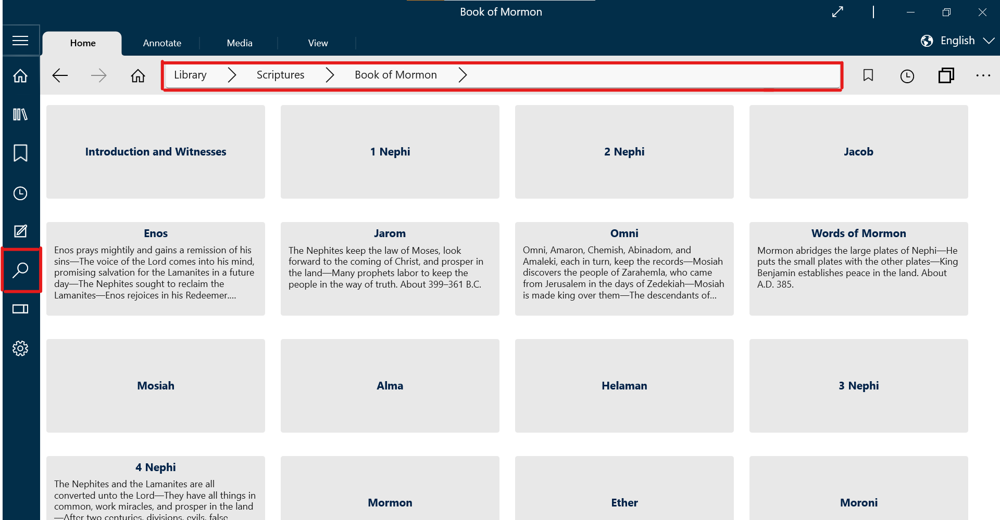
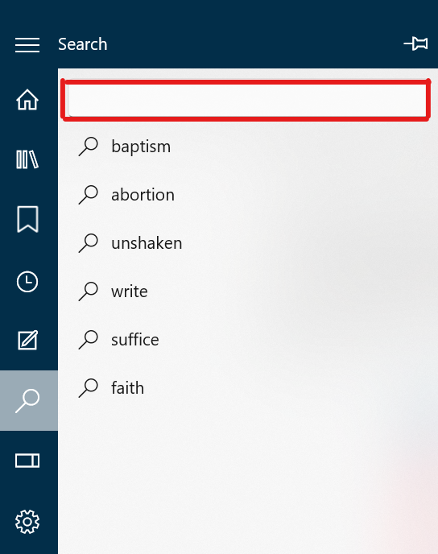
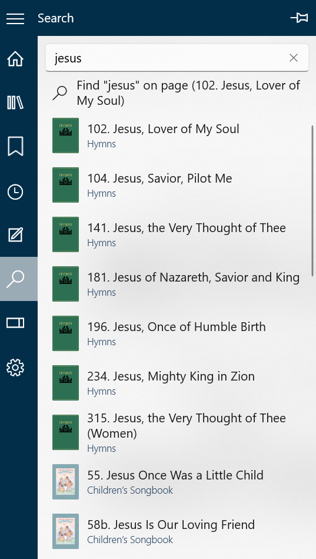
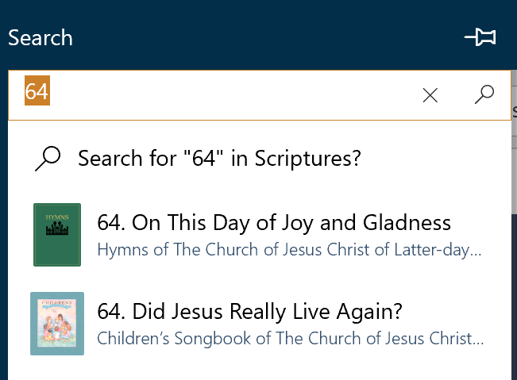
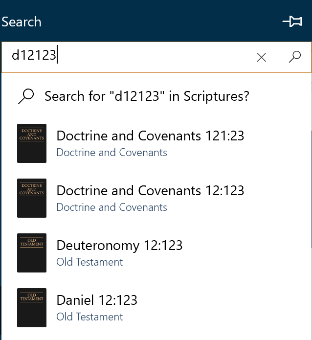
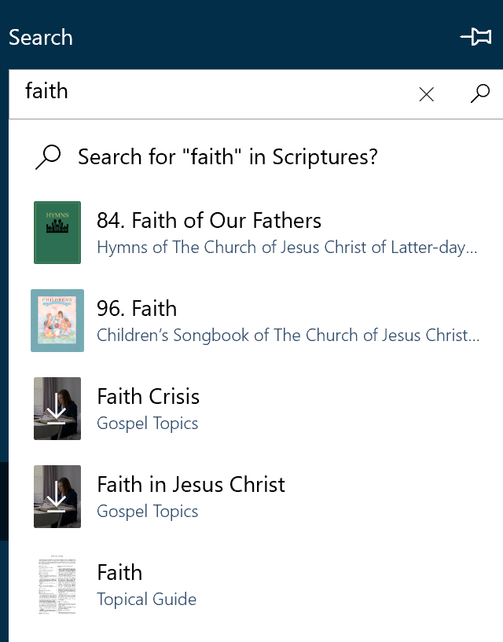
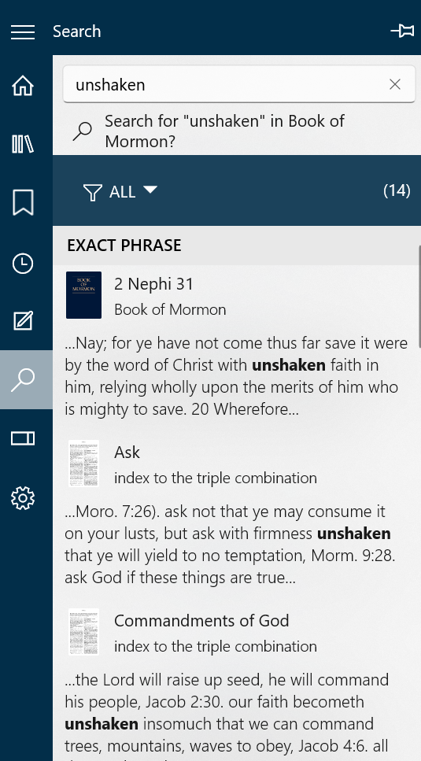
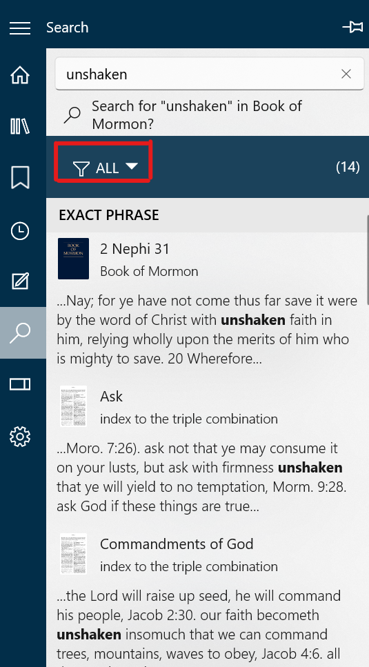
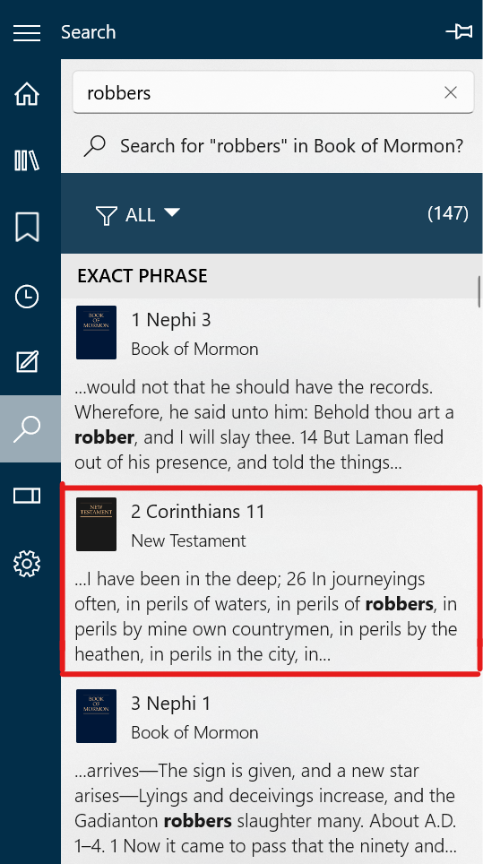
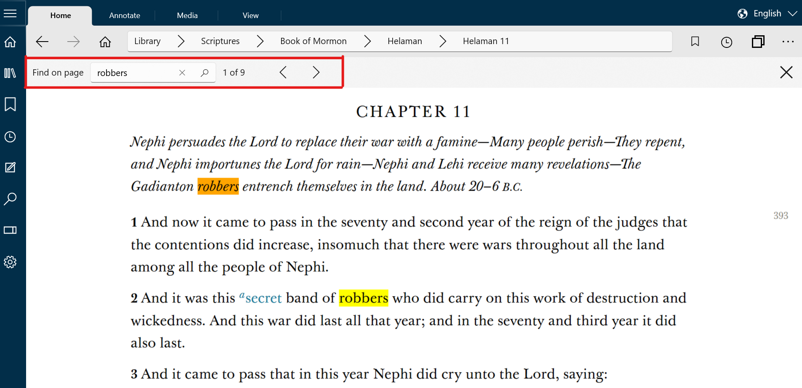

How Do I Search - Silent Video
How Do I Search - Silent Video How Do I Search - Silent Video
There are two types of search in GLW: Quick Search, Deep Search. A Quick Search allows you to quickly search hymns, lookup scriptures or find titles. A Deep Search will look beyond the titles to the text of the documents.
Any search can be initiated from the Navigation Bar or the Home Ribbon. The first topic of this section is (1) how to initiate a search from the Navigation Bar or the Home Ribbon in GLW. The second and third topics describe the two types of search in Gospel Library for Windows; (2) the quick search and (3) the Deep Search.
A search may either be initiated by pressing the search icon on the navigation bar or by pointing to the omni box on the home ribbon.
After pressing the search icon, a search pane will appear with the search box at the top of the pane.
The omni box in the home ribbon is an alternate search box
You can pin open the Search pane to make it easier to visit each of the results of your search. You can learn about pinning open navigation panes in Chapter 16: How Do I Customize My Reading Experience?
All searches must begin with an empty search box. Clear the search pane by clicking the X at the right of the box. Clear the Omnibox by clicking to right of the text.
Quick search is a way to find content quickly by entering very few keystrokes. It can be used to find hymns, lookup scriptures or find titles. You can use the quick search method to navigate to titles of all available Gospel Library content. You can also search for chapter names within all the content you have downloaded.
After you enter the search information, a pane will open with all the options that fit the search criteria. Click on the content you were seeking.
Note: Press ONLY an item below the Search Button at the top of the list. If you press the Search button or the Enter key you will enter Deep Search mode described in the next section.
To find a hymn in the hymn book or a song in the children's songbook, enter the number into the empty search box. A hymn or song can also be found by entering the first word(s) from the title. (If the first word is a single letter, such as O, enter the first two words, O God.)
To find a scripture, type the first letter of the book's name, optionally followed by the chapter number and the verse number. There is no need for colons, commas or or spaces. In the case where a number precedes a book title (e.g. 1 Nephi), the number may or may not be included.
By simply typing text into the search box, you search the titles of all available Gospel Library content as well as the chapter names of all content you have downloaded. There is no need to capitalize text.
A Deep Search will look beyond the titles to the text of the documents. The library consists of content items in hierarchical order . A content item can be a chapter of scriptures, a chapter in a book, a general conference talk, and a magazine article. Content items are organized into groups such as books of scripture, general conference sessions and issues of a magazine. The scope of the Deep Search can include either all content items, a selected group of content items, or a single content item. The group search can then be filtered using a pull-down menu.
You can also implement find on page by pressing CTRL+F on your keyboard.
After starting a group search a box will appear with a filter pull-down menu and a list of the content items that contain the search text.
The search results can be filtered using the pull-down menu. This menu provides options for filtering the search results. Selecting a filter reduces the number of search results.
To enter the content item (page) search, select one of the content items in the search results.
The content item (page) search provides a search box which has the search text. This text can be changed to modify the search. The number of locations where the search text is found is displayed. The "<" and ">" buttons can be used to move backward and forward to examine the search text in the content item.
